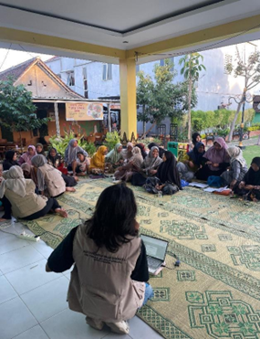
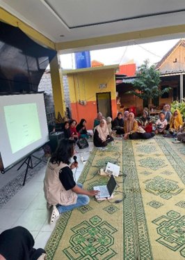
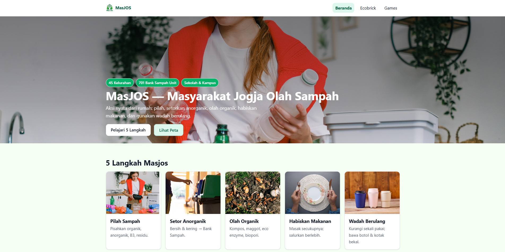

MasJOS Web - Masyarakat Jogja Olah Sampah Interaktif
MasJOS adalah website edukasi yang mengajak orang belajar memilah dan mengolah sampah dengan cara yang lebih interaktif dan tidak membosankan.
- Mengerjakannya bareng tim kecil berisi tiga orang menggunakan React (Vite).
- Ikut menyusun alur sistem sekaligus merancang tampilan UI/UX-nya.
- Membuat fitur edukasi, drag-and-drop untuk memilah sampah, serta halaman Ecobrick.
React · Vite · UI/UX · Edukasi lingkungan
Lihat website MasJOS